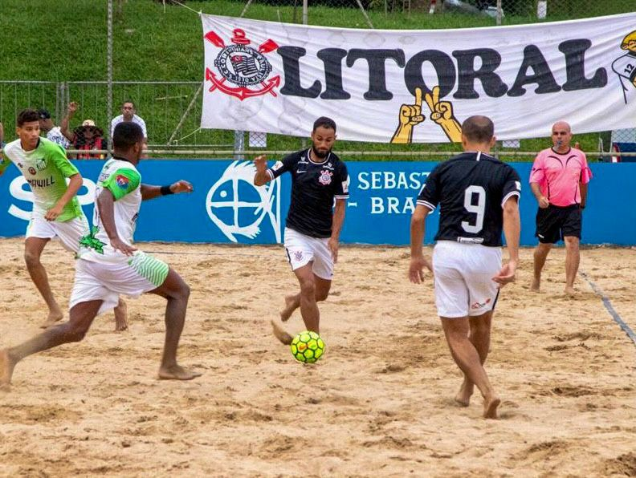
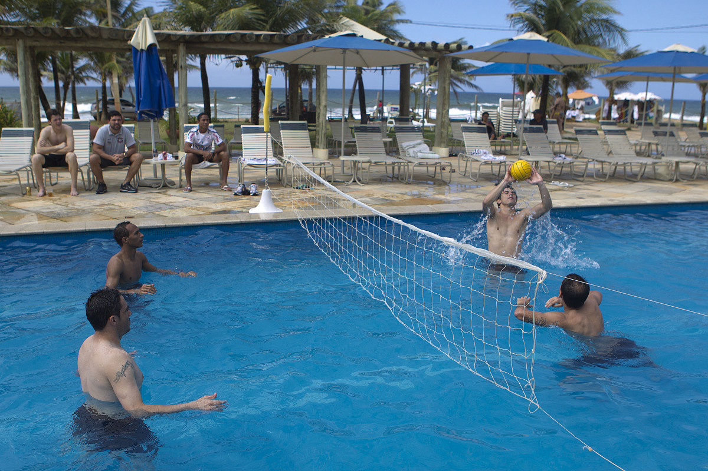
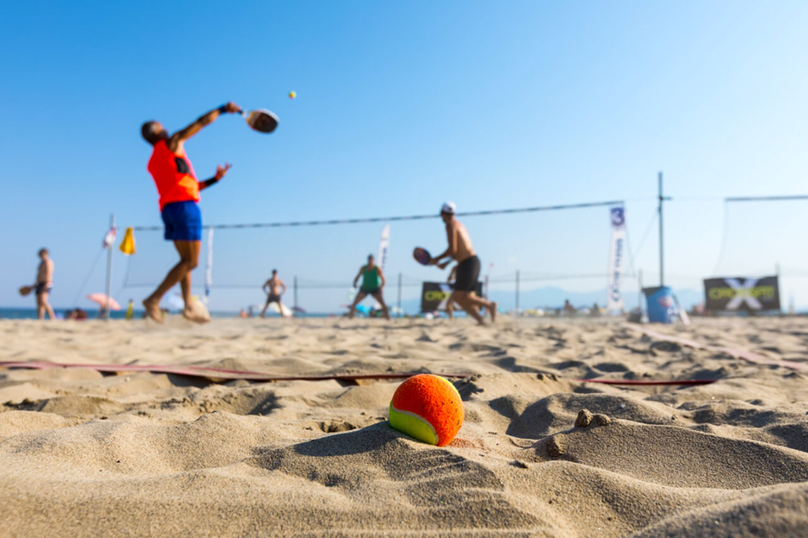

Tão antigos quanto o ohmem, os esportes são uma das invenções mais benéficas do homem. Além de manter o corpo saudavél , ainda auxiliam na criação de uma série de comportamentos positivos, como a humildade, a união, a empatia, dentre outros.
E os esportes com bola são, sem nehnuma dúvida, os mais populares. Mas você sabe a diferença entre alguns deles? É justamente isso que iremos descobrir abaixo.
| Esporte | Origem | Ambiente | Objetivo | Equipe | ||
|---|---|---|---|---|---|---|
| 1 | Baseboll | EUA,1971 | Campo com 1/4 de círculo, de 92 a 108,2 de raio. | Realizar o maior número de corridas. | Nove jogadores sem cada time. | |
| 2 |  | Beach soccer | Brasil,1930 | Quadra de areia com 35 ou 37 m X 26 ou 27 de largura. | Realizar gols no campo adversário. | Cinco jogadores em cada time. |
| 3 |  | Biribol | Brasil,1968 | Piscina com 4 x 8 x 1,3m | Derrubar a bola na quadra adversária | 2 a 4 jogadores por time. |
| 4 |  | Frescobol | Brasil,1946 | Ao ar livre | Manter a bola no ar pelo maior tempo possível. | Geralmente um conta um. |
Saiba mais acessando o link